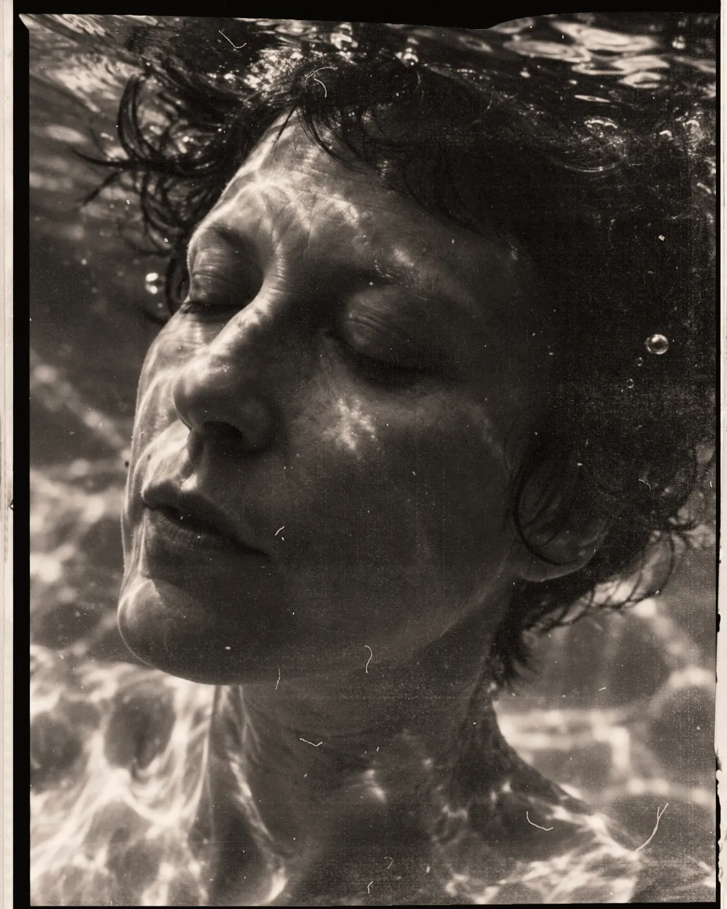

Portal Poem
A 12-week private mentorship
Bring me the thing you cannot finish.
A manuscript. A visual project. A film. An idea that has followed you for years. The beginnings of a body of work whose form you have not yet discovered.
Over twelve weeks, we enter into a sustained conversation with what you are trying to create.
I work closely with you and your material, attending both to the artistic demands of the project and to what the process reveals about your particular sensibility.
What are you attempting to articulate? What are you drawn to, and why? What keeps resisting form? What is your work asking you to learn, reconsider, or become capable of?
These questions are not separate from the making.
We use them to deepen your discernment, develop your creative language, and make decisions that give the work greater precision and coherence.
How we work
- Twelve weeks of private mentorship.
- Six 90-minute one-to-one sessions.
- Independent creative work between our meetings.
- Creative assignments and written feedback during the alternating weeks.
- Attention to the development, structure, language, and completion of your project.
We move between inquiry and actual making.
The work remains central throughout.
What you leave with
Something that exists.
A finished project, a substantial piece, or a body of work with clearer shape.
A sharper eye.
A more developed understanding of your creative instincts, artistic judgment, and the conditions in which you make your most meaningful work.
And a more conscious relationship with your own authorship.

Who this is for
Artists, writers, filmmakers, and other makers who are ready to give sustained attention to a creative project.
You don't need to arrive with a fully formed vision.
You do need to be willing to make things, examine your choices, and stay in conversation with the work as it develops.